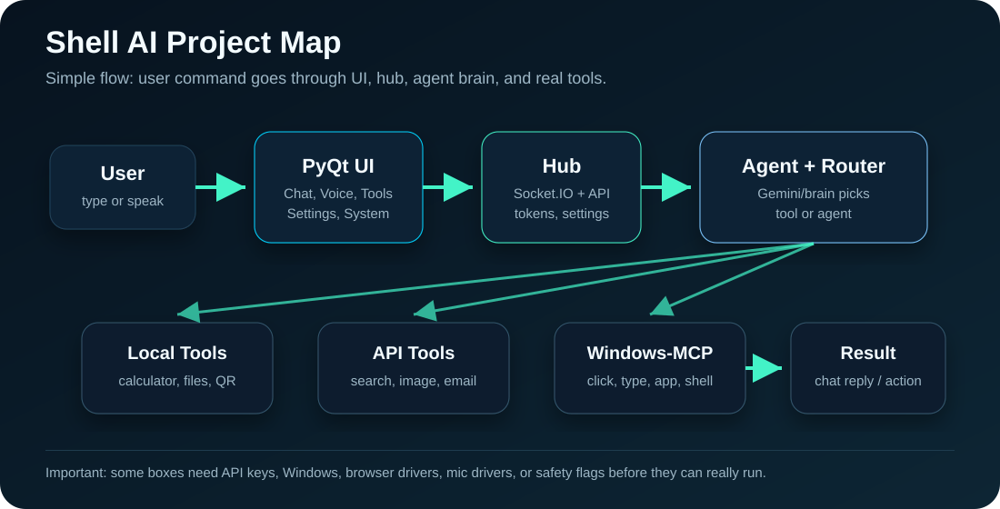
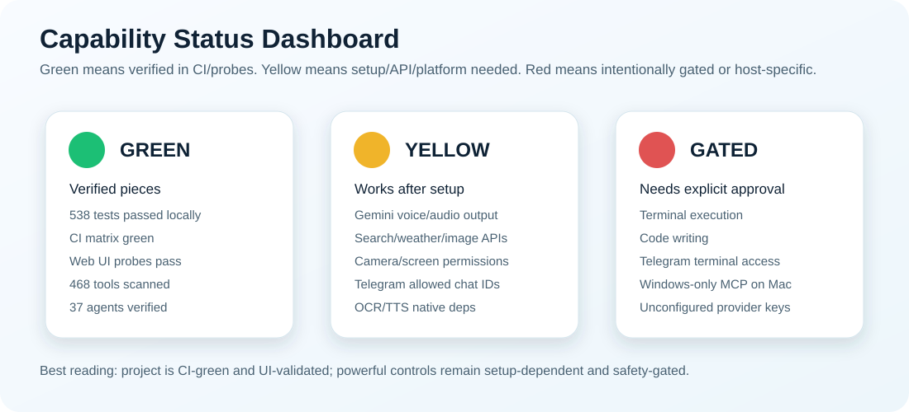

Isko ek smart control room samjho. User command bhejta hai, UI screen par aata hai, backend hub message pass karta hai, agent/brain decide karta hai, tool kaam karta hai, aur result wapas UI me reply ban kar dikhta hai.
| Part | Kid example | Real file / system |
|---|---|---|
| UI | Remote control jahan buttons aur chat box hain. | shell_ui/shell_cinematic_full.py |
| Hub | Post office jo messages bhejta aur lata hai. | shell_hub.py with Socket.IO and HTTP APIs |
| Agent brain | Class monitor jo decide karta hai kis helper ko bulana hai. | agent.py, brain/core.py, shell_agents.py |
| Tools | Toolbox: calculator, file, browser, screenshot, API, etc. | Many shell_*.py files |
| Windows-MCP | Robot hand jo Windows PC me click/type/screenshot kar sakta hai. | shell_windows_mcp.py, source package windows-mcp |

| Thing | Count | Meaning |
|---|---|---|
| Shell backend tools | 378 | Python functions jo UI/agent se chal sakte hain. |
| Windows-MCP tools | 17 | Real MCP desktop tools like Click, Type, Screenshot, App, Shell. |
| Agents | 38 | Specialist wrappers like Developer, Research, Security, Finance, Study. |
| Total catalog | 433 | UI Tools page ke liye visible capabilities. |
Categories me system, communication, browser, files, AI, productivity, developer, media, finance, games, general aur windows tools aate hain.
| UI page | Kya karta hai | Status |
|---|---|---|
| Chat | Text commands, tool commands, agents, streamed reply, manual listen button. | GREEN text-only policy tested |
| Voice | AI assistant style voice page, orb, transcript, mute, visual toggle, start/pause. | YELLOW UI tested, mic dependency needed |
| System | CPU/RAM/process stats and unavailable-state handling. | GREEN fake/random stats removed in tests |
| Tools | 433 capabilities ka catalog; run tool/agent/MCP from UI. | GREEN catalog and routing tested |
| Settings | API keys add/remove, language, safety toggles, backend-backed settings. | GREEN settings save tested |


| Area | Examples | Why green? |
|---|---|---|
| Catalog + UI discovery | List tools, list agents, show Windows-MCP tools. | Catalog command returned 433 items; tests verify Windows-MCP replaces old fake MCP actions. |
| Natural command router | "what is 2 + 3 * 4", "count words", "developer agent", "click 120 340". | Tests verify these route to correct tool IDs and args. |
| Chat speech policy | Text chat reply stays text; manual listen button can speak it. | Tests verify typed handlers do not auto-call TTS. |
| Voice page layout | Start/Pause, Mic On/Muted, Visual On/Off, transcript, error state. | Tests verify orb stays embedded and visual toggle does not move it away. |
| Settings/API key backend | /api-keys, /settings, .env update, .shell_settings.json. |
Tests verify settings write to backend store; README documents real endpoints. |
| Simple local utilities | calculator, text count, JSON/regex/hash/zip/QR-style utilities. | Mostly local Python code; lower risk than external APIs. Not every one is individually integration-tested. |
| Area | Needs | Notes |
|---|---|---|
| Full realtime voice | GOOGLE_API_KEY, LiveKit keys, mic, sounddevice, network. |
UI exists, but full voice loop depends on external services and audio driver. |
| Windows-MCP real desktop actions | Windows 10/11, Python 3.13+, uv/uvx, uvx windows-mcp. |
On Mac it correctly refuses with a "requires Windows" message. |
| Browser automation | Selenium/Playwright browser installed and allowed. | Can open/search/control browser once drivers are present. |
| Search, weather, news, stocks | Provider API keys and network. | Keys are managed from UI settings and backend /api-keys. |
| Image generation | Gemini/OpenAI/HuggingFace/Replicate/Stability/etc keys or public fallback. | Powerful, but result depends on provider availability. |
| WhatsApp, Instagram, Telegram, Email | Login/session/token/SMTP, sometimes browser UI permission. | These are real integrations but cannot be marked fully working without account setup. |
| OCR, audio/video, PDF/PPT | Tesseract, ffmpeg, office libraries, file permissions depending on tool. | Useful feature families, but native deps matter. |
| Thing | Reason | Correct action |
|---|---|---|
| Real Windows-MCP Click/Type/App/Shell | Windows-MCP is for Windows; current machine is Mac. | Test on Windows machine with Python 3.13+ and uvx. |
| Voice mic flow | UI reported sounddevice not installed earlier. |
Install audio dependency and grant mic permission. |
Old mcp_server.py as "real MCP" |
It is legacy JSON-over-HTTP dispatcher, not the current MCP surface. | Use shell_windows_mcp.py and windows-mcp:* tools. |
| Self-writing/evolution tools by default | Core/runtime mutation is intentionally blocked by safety flags. | Use only after enabling SHELL_ALLOW_CODE_WRITE or SHELL_ALLOW_AGENT_PATCH. |
Project me user ne CursorTouch Windows-MCP use karne ko bola tha. Current catalog me yeh 17 MCP tools exposed hain:
| Tool | Simple meaning | Status |
|---|---|---|
| Click | Screen coordinate par mouse click. | Windows required |
| Type | Focused field me text type. | Windows required |
| Scroll / Move / Shortcut / Wait | Mouse scroll, pointer move, keyboard shortcut, wait. | Windows required |
| Screenshot / Snapshot | Desktop image and UI state capture. | Windows required |
| App | Windows app launch/switch/control. | Windows required |
| Shell | PowerShell command through MCP. | Windows + safety |
| Scrape | Current/requested webpage text scrape. | MCP runtime |
| Clipboard / Process / Notification / Registry | Clipboard, processes, toast notifications, registry. | Windows + safety |
| MultiSelect / MultiEdit | Batch select or fill fields. | Windows required |
Agents ko chhote specialist teachers samjho. Developer agent coding me help karta hai, Research agent internet/research style tasks me, Security agent safety me, etc. Important: yeh mostly wrappers hain; inke andar AI brain/provider key chahiye hoti hai. Har agent separate magic robot nahi hai.
| Agent group | Examples | Status |
|---|---|---|
| Core build agents | Developer, Website Builder, App Builder, API, Database, DevOps, Testing. | AI provider needed |
| System/productivity agents | System, File, Browser, Network, Automation, Productivity, Communication. | Tools and permissions needed |
| Thinking/content agents | Creative, Research, Learning, Data, Security, Social. | AI provider needed |
| Extra life agents | Finance, Legal, Health, Cooking, Travel, Study, Tutor, Resume, Interview, Marketing, SEO, Game Design, Storyteller, Philosophy, Debate. | Advice only; critical domains need human expert |
| Swarm | deploy_swarm_tool with planner/coder/reviewer/debugger-style files. |
Experimental orchestration |
| Status | Meaning |
|---|---|
| GREEN | Agent list/catalog is discoverable and UI can route agent command like "developer agent fix the login bug". |
| YELLOW | Real answer quality depends on MultiAIBrain/provider keys and tool registry. |
| RED for claims | Do not claim agents are fully autonomous humans. They are planner/executor wrappers around AI calls and tools. |
Settings page me API keys add/remove karna sirf UI decoration nahi hai. Backend endpoints exist:
| Endpoint | Use |
|---|---|
GET /api-keys |
List: kaunsi keys required/optional hain aur set hain ya nahi. Secret value wapas nahi bheji jati. |
POST /api-keys |
Key set/update karta hai. Backend .env atomically rewrite karta hai. |
DELETE /api-keys/{key} |
Key remove karta hai and process environment refresh hota hai. |
GET/POST /settings |
General settings save hote hain in .shell_settings.json and env mirror hota hai. |
Supported provider names include Gemini/Google, OpenAI, Groq, Mistral, Perplexity, SambaNova, DeepSeek, Blackbox, OpenRouter, HuggingFace/HF, Bytez, OpenWeather, NewsData, AlphaVantage. Anthropic provider current catalog/API manager me listed nahi mila.

Project me kuch tools aise hain jo code likh sakte hain, terminal command chala sakte hain, ya workflow se file read/write kar sakte hain. Yeh by default locked rahne chahiye.
| Flag | Meaning |
|---|---|
SHELL_ALLOW_CODE_WRITE |
Shell runtime/core modules mutate karne ki permission. |
SHELL_ALLOW_AGENT_PATCH |
agent.py patch/hotpatch karne ki permission. |
SHELL_BLOCK_TERMINAL_EXEC |
Terminal/PowerShell/Python execution tools ko locked-down machines par disable karta hai. |
SHELL_BLOCK_WORKFLOW_COMMANDS |
Workflow shell commands ko locked-down machines par disable karta hai. |
Voice UI modern assistant page jaisa bana hai: orb center me, transcript side me, Start Voice/Pause Voice, Mic On/Muted, Visual On/Off. Test ne verify kiya ki Visual On/Off karne se orb side me jump nahi karta.
But full mic voice loop ke liye dependency chahiye. Current Mac screenshot/error me sounddevice not installed tha. Isliye UI green, real mic flow yellow/red until dependency install hoti hai.

Step 1: "Yeh Shell AI hai. Isko hum command dete hain."
Step 2: Chat page dikhao. Type karo: what is 2 + 3 * 4. Explain: AI ne calculator tool choose kiya.
Step 3: Tools page dikhao. Explain: iske paas 433 capabilities ki list hai, par sab ek jaise ready nahi hain.
Step 4: Settings page dikhao. Explain: API keys yahan se add/remove hoti hain, backend me real .env update hota hai.
Step 5: Voice page dikhao. Explain: UI ready hai, but mic dependency/API setup ke bina voice full run nahi karega.
Step 6: Windows-MCP explain karo. "Windows PC par yeh Click/Type/Screenshot kar sakta hai; Mac par safe error deta hai."
| Need | Where to look |
|---|---|
| Desktop UI | shell_ui/shell_cinematic_full.py |
| Hub/API/events | shell_hub.py |
| Tool catalog | shell_tool_catalog.py |
| Tool runner/gateway | shell_tool_gateway.py |
| Windows-MCP adapter | shell_windows_mcp.py |
| Agents | shell_agents.py, shell_extra_agents.py, shell_agent_tools.py |
| API key backend | shell_api_manager.py |
| Settings persistence | shell_settings_manager.py |
| Tests | tests/test_*.py |
| Area | Rating | Reason |
|---|---|---|
| Idea | Strong | Desktop assistant with tools, UI, voice, MCP, settings, and agents is a useful direction. |
| UI | Improved but large | Main UI file is huge; visually better, but needs more modular cleanup. |
| Backend | Feature-rich | Many tools and safety gates exist; needs more integration tests for external tools. |
| Reliability | Mixed | 30 tests pass, but APIs, Windows tools, mic, browser, social apps all depend on setup. |
| Best next work | Test matrix | Make a UI health dashboard that checks each tool family: Ready, Needs key, Needs Windows, Missing dependency, or Blocked by safety. |